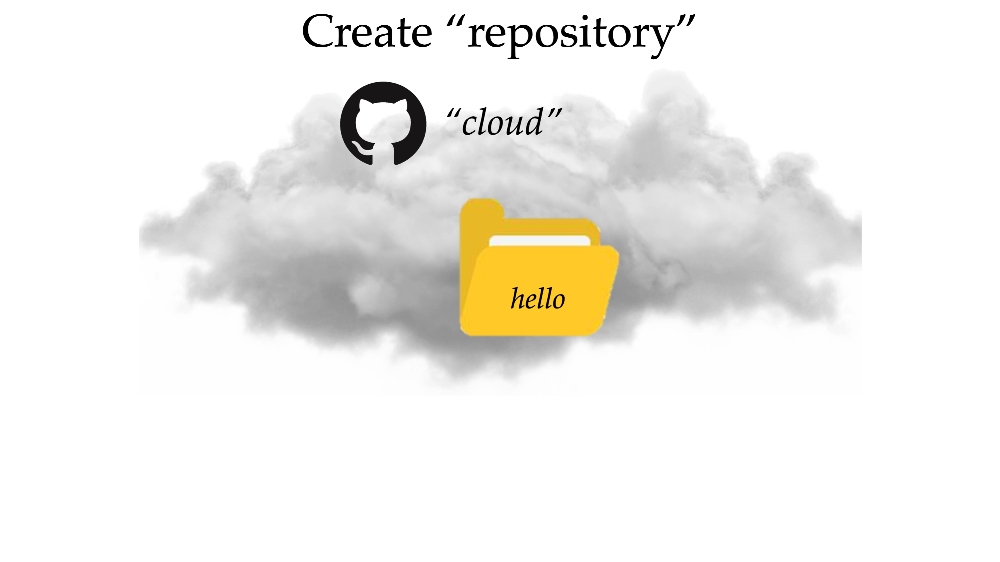
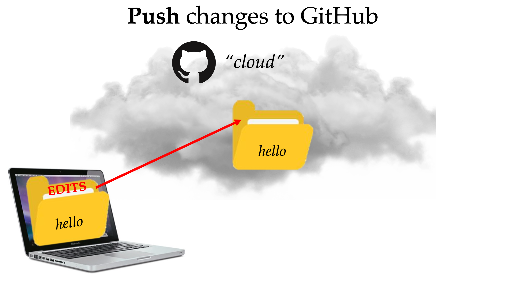
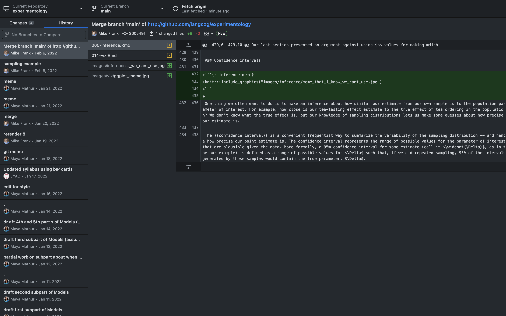

Chapter 20 GitHub Tutorial

🍎 Learning goals:
- Explain what Git and GitHub are
- Set up Git and GitHub on your own computer
- Learn how to make changes to a repository on GitHub
- Practice undoing a change you made on GitHub
- How to tell Git which files or folders to ignore in a project.
Introduction
Have you ever sent a collaborator what you think is a final copy of a manuscript, perhaps titled “Manuscript final” only to get back an updated version from them called “Manuscript final - JC?” So you make the requested changes and send it back to them as “Manuscript final - JC FINAL,” just as you receive an email from another collaborator with more edits in a file called “Manuscript final - MF?” If this sounds familiar, read on - we are here to help!
To begin, let us introduce you to Git.
Git is software that you can install and run locally on your own computer, and it allows you to track changes to your files as you are working on them. Git helps you manage nightmare scenarios like the one described above, because it makes it easy to have different versions of the same document, to easily work by yourself on the same project on multiple computers, and to collaborate with other people (whether you’re working at different times or simultaneously)! In other words, Git is like an undo button, but with labels showing you what changes were made when and with a history that goes back to the very first change you ever made to the project. This makes it ideal for collaborative projects.
But Git, as a version control system, is even more powerful in combination with GitHub:
GitHub provides the service of storing and sharing your git repositories198 “repo” is short for “repository”– repo is like a folder with files in it (that are usually related as part of a project), with an associated history of changes over time. online. Anyone can get a free account on GitHub and they provide free premium accounts to students (see here).
To describe some of the most useful functionalities of Github, we will set the stage by describing Github as a place where you can store your work in folders called repositories. These repositories live in the “cloud,” in that they are accessible via internet (github.com) and therefore allows you to access them from any device.

For instance, imagine that your collaborator has a project called “hello” - they have stored all of their code, materials, and analyses into a repository called “hello” on Github:

As a new member of the project, you need to copy this repository onto your own local device (e.g., your laptop) so that you can inspect the repository and make your own changes. In Github speak, this initial step of copying the repository onto your own device is called “cloning” the repository:

Once you make your changes to the “hello” repository (e.g., add or delete code, add or remove files), the changes will exist in your local repository but you will need to take steps to have them be reflected in back in the “cloud” where your collaborators can see those changes. The first step you will need to do is to “add” and “commit” your changes. “Adding” your changes will take a snapshot of the changes you made. “Committing” your changes records these added changes. Note that these are preparatory steps and all your changes are still local:

Now, you are ready to actually share your changes to the cloud, where all of your collaborators can see what you changed This step is called “pushing” to Github:
 So far, we have described one user’s interaction with Github. And while using Github as a way to track your own changes is a good idea, Github’s real potential is unlocked once you have many users collaborating on the same project. This allows any collaborator to “pull” the most recent version of the repository at any time, keep track of who made what change at what time, and easily revert to previous versions:

Now that we’ve covered the different functionalities of Github on a conceptual level, the next section will be a more practical tutorial for how to use Github in the ways described above.
0. Review basic terminal commands
In this tutorial we’ll be working in Terminal. Here are a few useful commands to be aware of:

(more here)
1. Install git
Go to http://git-scm.com/downloads and install git.
(Windows users, open GitBash for the rest of the tutorial; Mac users, open Terminal.)
1.1 Did you successfully install?
In terminal, type:
git --version
to see the current version of git that is installed.
Mac troubleshooting try installing: git version 1.8.4.2
1.2 Other versions
This tutorial will focus on how to use Github from the terminal, but if you prefer a simple point-and-click experience, you can install the GitHub desktop app. Here is a screenshot of what the desktop version looks like:

Other options include SourceTree (free), Tower (not free, but powerful and ~$25 with a student discount). It’s also possible to set up a git pane in RStudio.
1.3 Set your name and email address
Every Git commit uses this information. Type:
git config --global user.name "John Doe"
git config --global user.email johndoe@example.com
Also run this once (it ensures that git pushes in a sane manner):
git config --global push.default simple
2. Make a repo on GitHub, clone it to your computer
Make an account on GitHub: https://github.com/.
Create a new empty public repository at https://github.com/new
Call it ‘hello’ and make sure the “Add a README file” checkbox is checked199 For future reference (feel free to ignore this!): you can also turn any directory that’s already on your computer into a git repo by going to that directory using cd and then typing git init. Later, when you want to put the repo on GitHub, you go through the steps to make a new repo without initializing with a readme, then from your directory on your computer type the following (replacing the red text):.
git remote add origin git@github.com:your_user_name/repo_name.git
git push -u origin main
Then click the green ‘Code’ button to get the HTTPS URL:

Go back to Terminal (or GitBash).
Now we’ll clone the hello folder to your computer. For the purposes of this tutorial, let’s clone the folder to your desktop.
First use cd and ls to navigate to your desktop. (Mac users can type cd ~/Desktop to get there.)
Then type (replacing the URL with the one you copied above):
git clone https://github.com/[username]/hello.git
At this point, if you are using a new GitHub account, you will most likely be prompted to authenticate to GitHub. There are a few ways to do this, depending on how you are accessing GitHub (all the options are outlined in more detail here, including instructions for GitHub Desktop), but we think the easiest way is to create a personal access token (PAT) to use in place of a password. To do this, follow the directions outlined here.
Once you generate a PAT, try the command again:
git clone https://github.com/[username]/hello.git
If prompted, enter your GitHub username and newly generated PAT in the place of your password200 If you would like a credential helper to help you store the PAT, follow instructions here based on your operation system.. Now you should have a cloned copy of the empty repo on your Desktop.
3. Make some commits
What are “commits?” A commit is a snapshot of your project at a certain point in time. Each commit has an author, a time, a unique long ID (also called a ‘SHA’ or ‘hash’), and a message describing what change it makes.
3.1 Update your README file
A README file contains information about other files in a directory, and it’s customary to include one in your git repo. Your README will be rendered from markdown on the front page of your GitHub repository (see here and here for an example).
When you initialized your repo on GitHub, the site created an empty README file. Let’s write something in it.
Open the README file in a text editor201 There will be lots of files that are simple text files, with .md, .rmd etc. as filetypes. You can open all these with a text editor. Although your computer comes with a default one (e.g. Notepad, TextEdit), we would recommend downloading Sublime Text, which is free and has a lot of powerful tools that will be helpful in the future. and write a sentence or two describing your repo, and save your changes. (Read the basics of markdown and use it appropriately in formatting your README.)
3.2 Add and commit changes to git
In Terminal, navigate to the repo by typing:
cd hello
If you type:
git status
You’ll get a message telling you that your README has been modified.
Now we will add this file and commit it202 For future reference (feel free to ignore this!): you can add just part of the file by using git add -p README.md and following the instructions at the bottom of the terminal window. so that git takes a snapshot of the changes we made:
git add README.md
git commit -m "update readme"
(-m precedes a commit message, which allows you to describe what you changed.)
If you now type:
git status
You’ll get a message telling you that everything is up to date (“nothing to commit, working tree clean”).
3.3 Add another file to the repo + commit it
Use RStudio203 We’ll be using R and RStudio in the future. If you do not yet have those downloaded, you can open up a text editor and do the same thing. to make a new R script containing one line, e.g., print("hello world"). Save this as ‘pset0.R’ inside the hello folder.
Then, back in the terminal, type:
git status
This will tell you that a file called pset0.R exists, but isn’t being tracked by git.204 If you find a file called “.DS_Store” that is being tracked, that is a mac file saving folder preferences. You can add this to a .gitignore file as described in step 7 below so that git will not track it.
Now we will add this file and commit it (so that git starts to track it):
git add -A
(the -A specifies that we will add all of the files that have been changed in the repo)
git commit -m "initial commit of pset0.R"
4. Push your changes to GitHub
What we’ve done so far – add and commit – only affects your local computer. To get your changes on GitHub, use push:
git push
If you go to your GitHub account, you can now see the updated files.
5. Make more changes to the repo
Now make some changes to your pset0.R file (delete and/or add another line or two of code) and save it.
In terminal, type
git status
to see that pset0.R has been modified since the last commit.
To see the specific changes since the last commit, type:
git diff
Then commit:
git add -A
git commit -m "[describe change]"
Push to the repository on GitHub:
git push
TIP: Commits should be focused. Try to commit little bite-sized changes that are all related to each other together and easy to label, and make separate commits for other changes.
Best practice for commit messages is to make sure your commit message is not too long and would fit into the sentence: “When you pull this commit, it will ______.”
6. Rolling back to previous versions
Sometimes you will want to go back to a previous commit. Here’s how to do it:
To view previous commits, type:
git log
To change the number of displayed commits, type the number you want to see preceded by a dash. For example, to view the three most recent commits, type:
git log -3
(You can also view the commit history on GitHub.)
You can use the long ID numbers attached to commits (also called hashes or SHAs) to roll back to them if you need to see a previous version of the repo. This can be very useful if something breaks and you don’t know how that happened. You can roll back to the last commit where your program wasn’t broken and see what files changed since then, and how.
For example, let’s say we wanted to roll back to the very first commit so we could run the code as it was back then. Let’s look at the very first commit. You can find it by typing git log and then pressing the space bar to scroll down to the very first commit. Copy and paste the hash for this commit, (press ‘q’ to get back to the main terminal window), and then type (replacing the hash with the one you copied):
git checkout a240f92a22cb8e9b1300bfa690e99ef07692151e
or just
git checkout a240f92
(Git is smart enough to figure out what commit you meant to type if you provide the first 8-10 characters of the hash.)
If you open up the hello folder on your desktop, you’ll notice that it’s now in the state it was after you made your first commit.
IMPORTANT WARNING: After you’ve finished inspecting a checkout, make sure you get back to where you started [the latest commit on the main branch] by typing:
git checkout main
To revert your files to the state they were in in an earlier commit, type (replacing 0766c053 with the first 8-10 characters of the hash you copied):
git revert --no-commit 0766c053..HEAD
git commit -m "revert all changes since first commit"
This will essentially take all of the changes you made since this commit, undo them, and then save this as a new commit. (Your prior commits will still exist.)
For more info on undoing things in git, check: https://github.com/blog/2019-how-to-undo-almost-anything-with-git
If you’d like to revert one specific commit (rather than all of the commits after a specific commit), type:
git revert --no-commit 0766c053
git commit -m "revert the commit where I did xyz..."
7. What not to put on git
There are some things you don’t want on git:
output files (files that are deterministically generated by other files in the repo, e.g. generated PDFs in a LaTeX project repo)
log files (like .RData and .Rhistory. You can’t describe what “changes” were made to them and different people’s .RData and .Rhistory files will always conflict.)
sensitive data (like human subject data and passwords)
configuration files that have configurations specific to your computer (Important: If you are running stuff on Mechanical Turk, make sure your bin/mturk.properties file is NOT on git, because that file contains an access key to allow you to authenticate with Amazon.)
You can put these in a special .gitignore file so git won’t suggest you add them and will even remind you not to add them if you try to. You can create this .gitignore file in a text editor like Sublime Text and update as needed.
Your .gitignore file might look like this (saved exactly as “.gitignore” without a file extension):
# R created files
*.Rproj
*.Rproj.user
*.Rhistory
*.Ruserdata
*.history
*.RData
# Image/output files unless otherwise specified
*.png
*.docx
*.doc
*.jpg
*.gif
# Misc Knit Files
*.aux
*.gz
*.log
*.rdx
*.rdb
*.knit.md
*cache
*.results
# Other
*.httr-oauth
*.DS_Store
# MTurk credentials and data
auth.json
my-own-auth.json
mturk/
mturk-and-gmail.txt
# Specific file keep
!README.md
!/original....pdf
.Rproj.userFurther Resources
GitHub has many useful guides for learning about branches, pull requests, forking and more: https://guides.github.com/ https://help.github.com/articles/good-resources-for-learning-git-and-github/
Though the things we covered in this tutorial may seem overwhelming, there are really only a handful of commands that you need to know, which can be found (alongside some commands we didn’t cover) on this handy cheatsheet.
Request a premium account at https://education.github.com/ for free private repos.
To save some time, tell git to remember your GitHub username and password: https://help.github.com/articles/caching-your-github-password-in-git/
Or set up an SSH key to log in less often: https://help.github.com/articles/generating-ssh-keys
For Windows:
you need this code:
eval
ssh-agent -sssh-add
and you need to run this part in GitBash
For students seeking deeper Git knowledge, ProGit is a thorough open source book from Scott Chacon. It can be viewed online or downloaded in ePub, Mobi, or PDF formats.
Acknowledgments: Thank you to Cayce Hook, Erin Bennett and Daniel Watson for creating the first version of this tutorial for Psych 251!